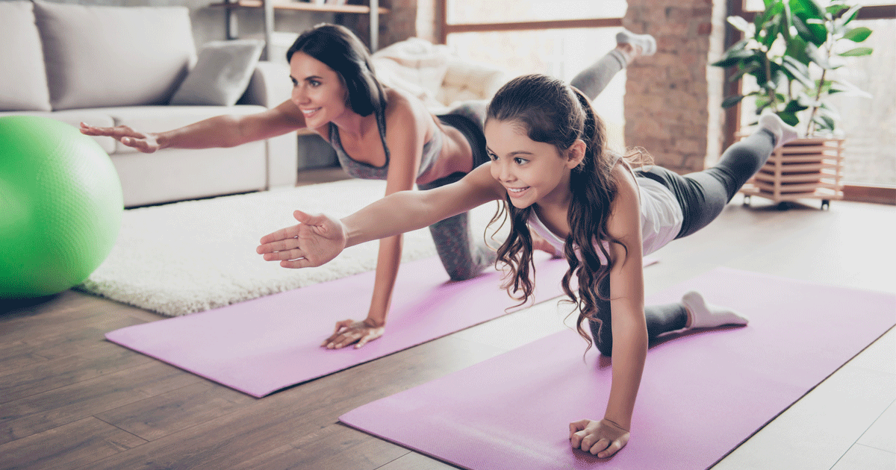

Staying fit at home is not only convenient but also achievable regardless of your budget. With the right equipment and a well-planned routine, you can easily maintain or improve your fitness. If you're on a tight budget, start with simple and affordable tools like resistance bands and a yoga mat. Resistance bands are great for building strength, and they take up very little space, making them ideal for any home. A yoga mat is essential for comfort during floor exercises such as stretching, core workouts, or yoga sessions.
For those with a bit more flexibility in spending, investing in a pair of adjustable dumbbells or kettlebells can significantly enhance your strength training routine. These tools allow for a range of full-body exercises, targeting muscles effectively while adding variety to your workouts. Pair these weights with a stability ball for added balance and core strength, which can challenge your muscles in different ways, ensuring a more well-rounded workout.
If you have a larger budget and more space, a compact treadmill or resistance machine can take your home gym to the next level. A treadmill allows you to engage in cardio without leaving the house, making it easy to maintain endurance and heart health. Resistance machines, though more expensive, provide a controlled environment to safely build strength and muscle mass, suitable for all fitness levels. These investments pay off in convenience and long-term fitness gains.
Regardless of your equipment, it’s important to complement it with a balanced exercise routine. Bodyweight exercises like push-ups, squats, lunges, and planks are effective and cost nothing, yet they can be adapted to various fitness levels. By combining cardio, strength training, and flexibility exercises, you can create a complete and versatile home workout routine that supports your goals, no matter your budget.
-by Sarah Thompson
